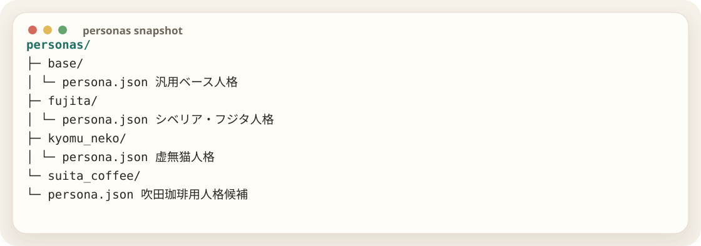

人格をコードではなくファイルにする
次に切り出したのは人格だった。キャラクター性がGoコードに埋まっていると、別キャラを作るたびにコードを触る必要がある。そこで、人格を personas/{name}/persona.json に分離した。

虚無猫はこの段階で追加した。名前、説明、反応ワード、口調、禁止事項、システムプロンプトをJSONで持たせることで、本体コードを変えずに人格を変えられるようになった。
作業者人格だけ変えれば別Pluginに見えるようにしたい
GPTPERSONAとPERSONA_PATHを分けましょう。PERSONAは名前、PERSONA_PATHは実際に読むJSONです。
PERSONA=kyomu_neko
PERSONA_PATH=personas/kyomu_neko/persona.json
IMAGE_REF_DIR=assets/kyomu_neko/refsここで重要だったのは、人格と機能を混ぜないこと。人格は「誰として話すか」、機能は「何をするか」。この2つを分けたことで、後からconfiguiで人格だけ編集する道ができた。
FEATURESの導入
同時に FEATURES も入れた。返信、お題、定時画像、放置投稿、画像返信、歓迎、管理者コマンドをカンマ区切りでON/OFFできる。
FEATURES=reply,theme,scheduled_image,idle_post,image_reply,welcome,admin